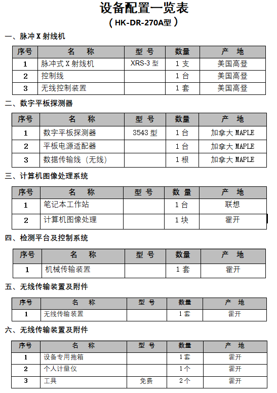

-
-
- 产品名称：X射线便携式DR数字成像系统
- 产品类型：无损探测评价设备
- 生产商：霍开自研开发
- 功能：X射线实时探测成像
-
- 产品详情
- X射线实时成像系统主要是由脉冲射线源、数字平板探测器、计算机图像处理系统、机械装置、无线传输装置等五部分组成的高科技产品。它主要是依靠X射线可以穿透物体，并可以储存影像的特性，进而对物体内部进行无损评价，是进行产品研究、失效分析、高可靠筛选、质量评价、改进工艺等工作的有效手段。
- 该产品是一款轻便的X射线DR系统。脉冲式X 射线机在很短时间内（25 纳秒）产生高强度X 射线能量（突发脉冲），在X 射线机前面12 英寸(30.50CM)处测得每个脉冲的输出剂量约3mR，根据您要检测的样品，可以选择不同型号的X射线机，脉冲X 射线技术比传统的恒电位X 光机或放射源进行现场操作具有先天的优势。 超大尺寸成像探测器，能满足多种样品检测需要，样品检测情况实时呈现在电脑上，实验结果可保存可打印。
- 计算机图像处理系统是我公司独立研制开发的、是迄今为止国内同行业技术水平最高的同类产品。主要特点是可以根据不同行业用户的需求，编程不同的应用界面及图像处理程序，利用高性能的编程技术，使操作界面简单易懂，最大限度的减少操作步骤，最快速度地达到操作人员的最终需求。
